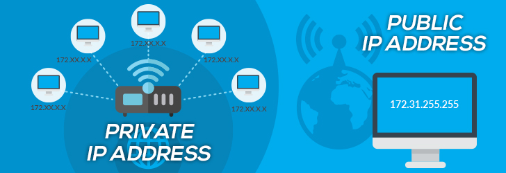

IP Address , Packets and Routing
IP (Internet Protocol)Address is an address of your network hardware. It helps in connecting your computer to other devices on your network and all over the world. An IP Address is made up of numbers or characters.
An example of an IP address would be: 506.457.14.512
All devices that are connected to an internet connection have a unique IP address which means there’s a need of billions of IP addresses. This requirement is fulfilled by the new IP version IPv6.
There are are two IP versions: IPv4 and IPv6. IPv4 is the older version which has an space of over 4 billion IP addresses. However, the new IPv6 version can provide up to trillions of IP addresses to fulfill the need of all internet users and devices.
The IPv4 version used to configure IP addresses in numerical value (numbers) which may conflict with other IP addresses. That’s why IPv6 adopted the hexadecimal method to provide unique IP addresses to billions of users in the world.
Example of an IPv6 IP address would be:
4ggr:1925:5656:7:600:t4tt:tc54:98vt
There are a few types of IP addresses like private IP addresses, public IP addresses, static IP addresses and dynamic IP addresses. Let’s talk about these different types of IP addresses one by one:
Private IP Address
A private IP address is the address of your device connected on the home or business network. If you have a few different devices connected to one ISP (Internet Service Provider), then all your devices will have a unique private IP address. This IP address cannot be accessed from devices outside your home or business network.
For example: 192.168.1.1
Private IP addresses are not unique because there are limited number of devices on your network.
You can find out the private IP address of your device using a few techniques. If you are a Windows user, then simply go to the command prompt and enter the command ipconfig. If you’re a mac users, then you need to enter the following command ifconfig in your Terminal app
If you are using the internet on a mobile phone, then you can go to your WiFi settings to find out the IP address. iOS users can find the IP address by clicking on the ‘i‘ button next to the network they are connected to. Android users can click on the network name in their WiFi settings, and it will show the IP address.
Public IP Address
Your public IP address is the main IP address to which your home or business network is connected. This IP address connects you to the world, and it’s unique for all users.
Static and Dynamic IP Addresses

The dynamic IP address configures automatically and assign an IP to your network when you set up the router with internet. This distribution of IP addresses is managed by Dynamic Host Configuration Protocol (DHCP). DHCP can be your internet router that assigns an IP address to your network in your home or business environment.
Structure of an IP header, containing the fields described above and below as well as 'Version', 'Total length', 'Protocol', 'Header checksum', 'Options (+padding)' and 'Data variable'.
IHL indicates the header length. Packets use Type of Service to request special treatment (e.g. being put at the front of any queues). The identification, flags, and fragmentation offset fields keep track of each fragment when an IP packet is split up into smaller packets. The time to live is set when the IP packet is sent off, and the number is reduced by 1 each time the packet goes through a router. When the time to live gets to 0, the packet is deleted. This stops packets from circulating in a loop. You can find all the details about the header of IPv4 packets as well as the header of IPv6 packets on Wikipedia.
Routers got their name because they route IP Packets across networks: a router device connects different links. It examines IP packet headers, looking at the destination address and consulting a routing table of known networks. The table indicates which connections to send the packet on as the next link. The connections on a router are called interfaces: through the router, they interface between different link types.
An IP packet enters a circle labelled as a router. An arrow links its destination address to a routing table, with two columns, "NET" and "INT". The IP packet is shown leaving the router along a path to device A, a tablet. The router is also connected to devices B, C and D, a printer, a desktop, and a laptop respectively.
In the animation, an IP packet arrives at a router, which compares the packet’s destination address with the networks in the routing table. The packet is identified as belonging to network A, so the router routes it out of interface 1.
Often, routers learn how to reach distant networks by exchanging information with their neighbouring routers and building their own routing tables. This exchange of information to learn about other networks is called a routing protocol. You can find more information about routing protocols on Wikipedia.
Several different devices with different IP addresses in the 192.168.1.X network are connected to a switch, by wired or wireless connections. The switch is inside a circle labelled "Home hub/gateway/router", which also contains a smaller circle labelled "Router" and a box labelled "Modem" . A line labelled LAN with the IP network address 192.168.1.0 connects the switch and router, and a line labelled WAN with the IP address 82.5.6.11 connects the router and the modem. The modem is connected to an ISP (outside the home hub circle), and the ISP is connected to the internet.